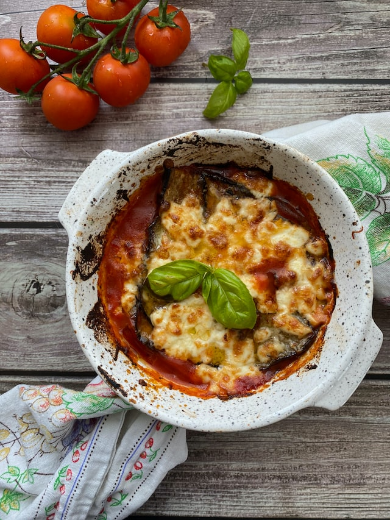

Odin Recipes
Aubergine Parmigiana

Description
This delicious aubergine parmigiana is a classic Italian dish of layered aubergines, tomato sauce, cheese and
herbs, all baked to golden perfection!
Ingredients
- 2 large aubergines, cut into slices
- Salt and pepper
- 2 tablespoons olive oil
- 1 large onion, finely chopped
- 3 cloves garlic, minced
- 400g tinned chopped tomatoes
- 1 teaspoon dried oregano
- 1 teaspoon dried basil
- 2 tablespoons tomato puree
- 100g Parmesan cheese, grated
- 100g mozzarella cheese, grated
Steps
- Preheat the oven to 180C/350F.
- Place the aubergine slices on a baking sheet and season with salt and pepper. Drizzle with the olive oil and bake in the oven for 20 minutes.
- Meanwhile, heat the remaining olive oil in a large frying pan over a medium heat. Add the onion and garlic and cook for 5 minutes until softened.
- Add the chopped tomatoes, oregano, basil and tomato puree. Simmer for 15 minutes until the sauce has thickened.
- To assemble, spread a layer of the tomato sauce in the bottom of an ovenproof dish. Top with a layer of aubergines, followed by a layer of Parmesan cheese. Repeat until all the ingredients have been used, finishing with a layer of Parmesan cheese.
- Sprinkle the mozzarella cheese over the top and bake in the oven for 30 minutes until golden and bubbling.
- Serve hot. Enjoy!
Return to menu